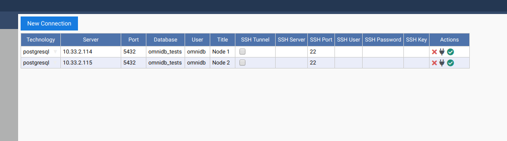
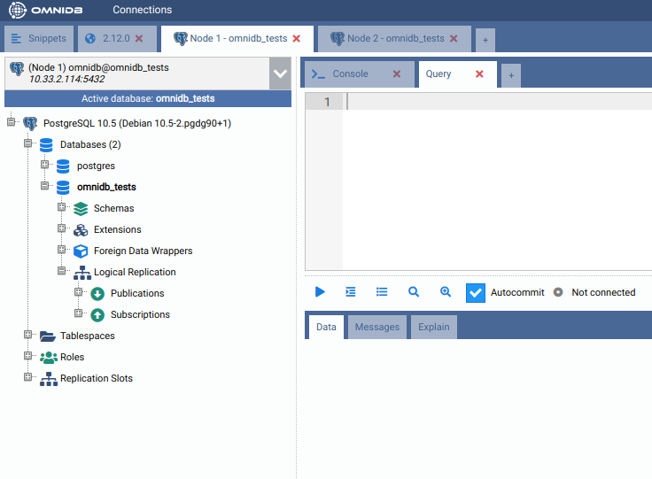
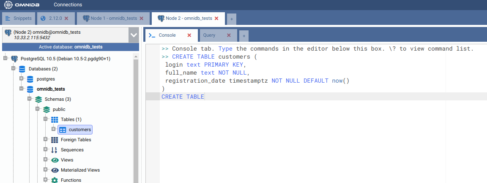
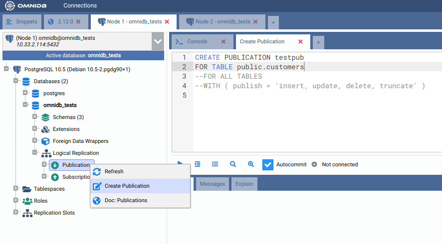
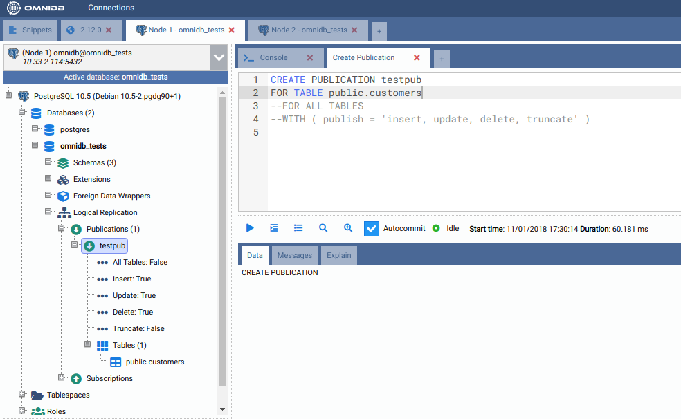
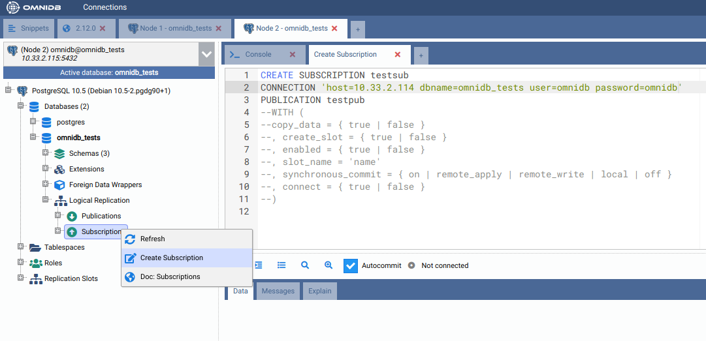
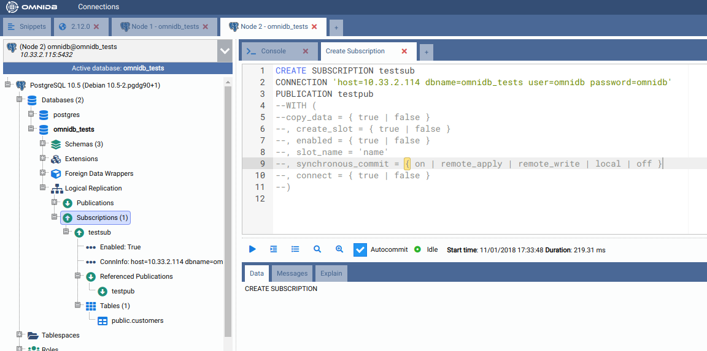
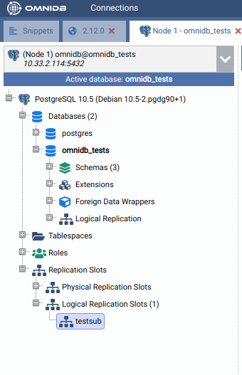
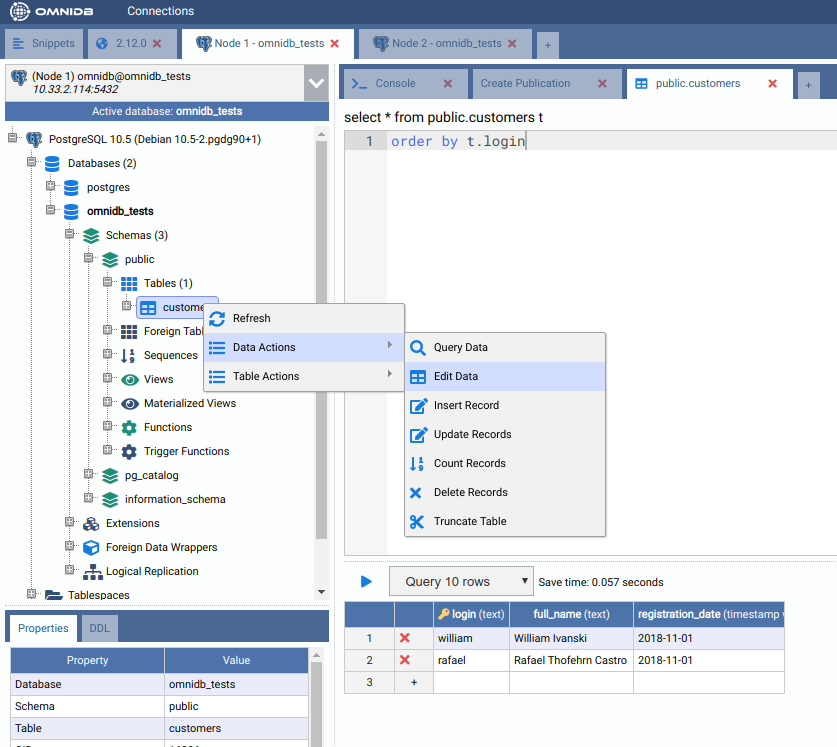
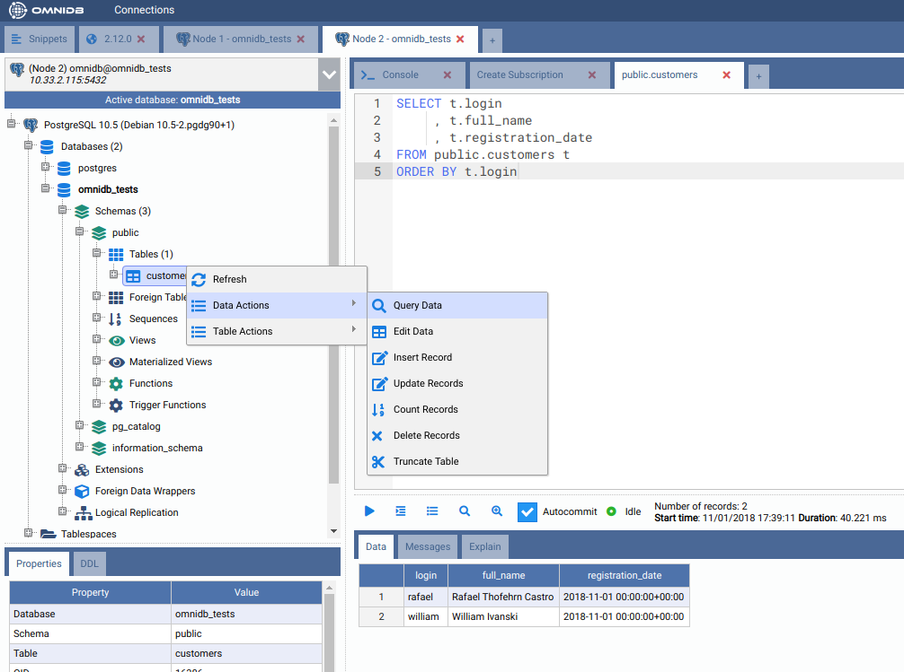

15. Logical Replication
PostgreSQL 10 introduces native logical replication, which uses a publish/subscribe model and so we can create publications on the upstream (or publisher) and subscriptions on downstream (or subscriber). For more details about it, please refer to the PostgreSQL documentation.
In this chapter, we will use a 2-node cluster to demonstrate PostgreSQL 10
native logical replication. Note that on each PostgreSQL instance, you need to
configure wal_level = logical and also make sure to adjust file pg_hba.conf
to grant access to replication between the 2 nodes.
Creating a test environment
OmniDB repository provides a 2-node Vagrant test environment. If you want to use it, please do the following:
git clone --depth 1 https://github.com/OmniDB/OmniDB
cd OmniDB/OmniDB_app/tests/vagrant/postgresql-10-2nodes/
vagrant up
It will take a while, but once finished, 2 virtual machines with IP addresses
10.33.2.114 and 10.33.2.115 will be up and each of them will have PostgreSQL
10 listening to port 5432, with all settings needed to configure native
logical replication. A new database called omnidb_tests is also created on
both machines. To connect, user is omnidb and password is omnidb.
Connecting to both nodes
Let's use OmniDB to connect to both PostgreSQL nodes. First of all, fill out connection info in the connection grid:

Then select both connections. Note how OmniDB understands it is connected to PostgreSQL 10 and enables a new node in the current connection tree view: it is called Logical Replication. Inside of it, we can see Publications and Subscriptions.

Creating a test table on both nodes
On both nodes, create a table like this:
CREATE TABLE customers (
login text PRIMARY KEY,
full_name text NOT NULL,
registration_date timestamptz NOT NULL DEFAULT now()
)

Create a publication on the first machine
Inside the connection node, expand the Logical Replication node, then right
click in the Publications node, and choose the action Create Publication.
OmniDB will open a SQL template tab with the CREATE PUBLICATION command ready
for you to make some adjustments and run:

After adjusting and executing the command, you can right click the Publications node again and click on the Refresh action. You will see that will be created a new node with the same name you gave to the publication. Expanding this node, you will see the details and the tables for the publication:

Create a subscription on the second machine
Inside the connection node, expand the Logical Replication node, then right
click in the Subscriptions node, and choose the action Create Subscription.
OmniDB will open a SQL template tab with the CREATE SUBSCRIPTION command ready
for you to make some adjustments and run:

After adjusting and executing the command, you can right click the Subscriptions node again and click on the Refresh action. You will see that will be created a new node with the same name you gave to the subscription. Expanding this node, you will see the details, the referenced publications and the tables for the subscription:

Also, the CREATE SUBSCRIPTION command created a logical replication slot
called testsub (the same name as the subscription) in the first machine:

Testing the logical replication
To test the replication is working, let's create some data on the node 1. Right
click on the table public.customers, then point to Data Actions, then click
on the action Edit Data. In this grid, you are able to add, edit and remove
data from the table. Add 2 sample rows, like this:

Then, on the other node, check if the table public.customers was automatically
populated. Right click on the table public.customers, then point to Data
Actions, then click on the action Query Data:

As we can see, both rows created in the first machine were replicated into the second machine. This tell us that the logical replication is working.
Now you can perform other actions, such as adding/removing tables to the publication and creating a new publication that publishes all tables.